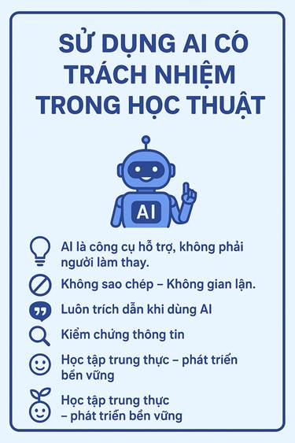

Định hình bộ nguyên tắc đạo đức trong kỷ nguyên trí tuệ nhân tạo, cân bằng giữa năng suất và sự minh bạch trong nghiên cứu học thuật.
Sự phát triển nhanh chóng của AI mở ra cơ hội lớn cho giáo dục đại học nhưng cũng mang lại thách thức lớn về đạo đức học thuật, bản quyền và nguy cơ gian lận. Bài báo cáo này nghiên cứu chính sách sử dụng AI tại trường đại học nhằm xây dựng một định hướng sử dụng công nghệ có trách nhiệm.
Chính sách của Đại học Quốc gia TP.HCM khuyến khích chuyển đổi số, cho phép sinh viên sử dụng AI như công cụ trợ lý để tìm ý tưởng, sửa lỗi ngôn ngữ, tóm tắt tài liệu. Tuy nhiên, nghiêm cấm nộp sản phẩm do AI tạo ra làm bài làm cá nhân và yêu cầu sinh viên trích dẫn minh bạch.
Thử nghiệm sử dụng ChatGPT để lập dàn ý và tìm ý tưởng cho bài luận 1.500 từ về chủ đề "Tác động của mạng xã hội đến kỹ năng giao tiếp của sinh viên". Sau đó, tiến hành đối chiếu kiểm chứng thông tin, tự viết lại 100% bằng ngôn từ cá nhân và bổ sung trích dẫn sử dụng AI rõ ràng.
Cần phân định ranh giới rõ ràng giữa việc AI hỗ trợ gợi ý (hợp lệ) và sao chép nguyên văn (gian lận). Việc lạm dụng AI không kiểm soát sẽ làm suy giảm nghiêm trọng kỹ năng tư duy phản biện, viết học thuật và nghiên cứu độc lập của sinh viên.

Tính toàn vẹn học thuật là lằn ranh không thể vượt qua khi sử dụng AI. Việc nhận biết hiện tượng ảo giác AI (Hallucinations) và luôn giữ tâm thế hoài nghi tích cực đối với các kết quả tự động sinh là yếu tố sống còn để đảm bảo chất lượng của các bài nghiên cứu khoa học.